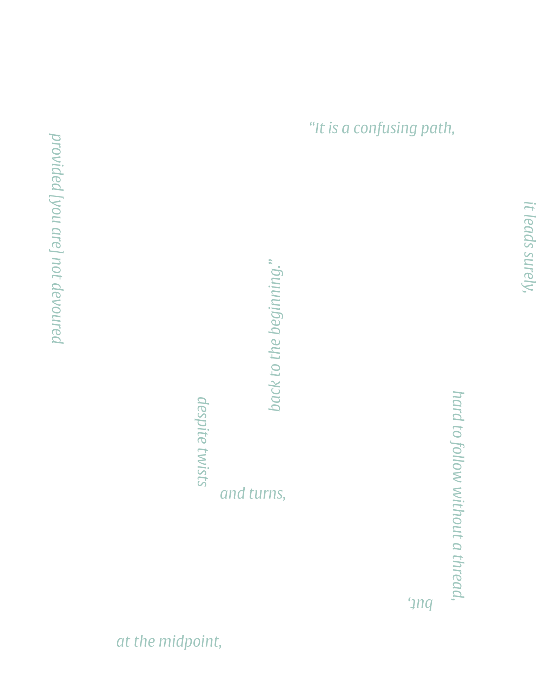
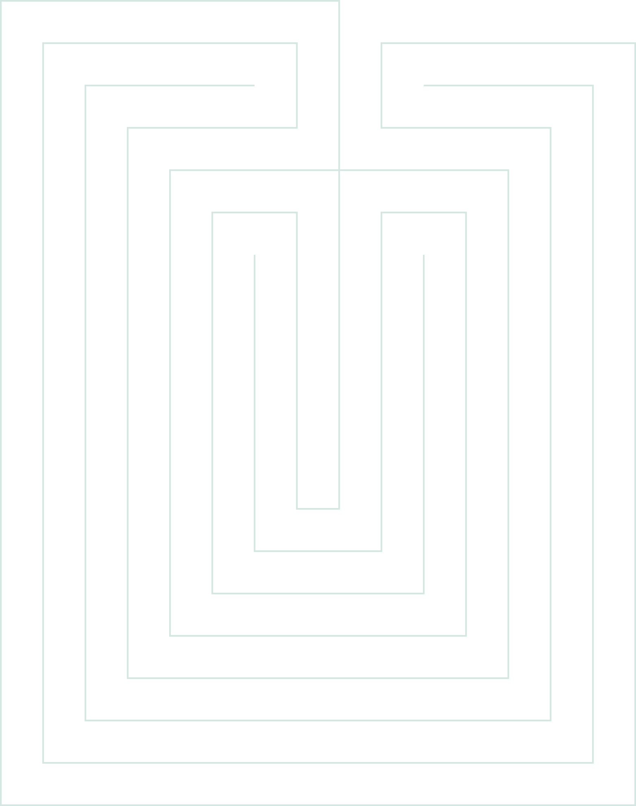

Mythical Roots
The Labyrinth is famously known for its association with the Greek myth which goes as follows:
Once upon a time, the sea god Poseidon sent a white bull to the court of Minos at Knossos in Crete for ritual slaughter.Minos was one of the three sons from the union of Europa and Zeus; when Zeus was took the form of a bull. Europa's husband was the King of Crete, Asterion, who looked over the boys as if they were his own. When Aseterion died, it was unclear which of the three sons should ascend to power. The three sons were Minos, Sarpedon, and Rhadamanthus. It was Minos, whose name in Cretan actually means king, who was fated to be king of Crete even though Minos' ascension to power was a difficult journey because he first had to see off his sibling rivals.
In Greek mythology, the Minotaur was a monster with the body of a man and the head and tail of a bull. The Minotaur was the offspring of the Cretan Queen Pasiphae and a majestic bull. The word Minotaur is a compound word consisting of the ancient Greek name "Minos" and the noun "bull." Thus, the word Minotaur comes to mean "bull of Minos." In addition, the Minotaur's birth name, Asterion, means "starry one" in ancient Greek, which suggests an association with the bull constellation: Taurus.
Daedalus is a figure from Greek mythology famous for his clever inventions and as the architect of the Minotaur’s labyrinth on Crete. He is also the father of Icarus who flew too close to the sun on his artificial wings and so drowned in the Mediterranean. By the Roman period, Daedalus had acquired a long string of accomplishments and he came to represent, in general, the supreme master craftsman.
While the construction of the Labyrinth was underway, King Minos discovered that his only human son with Pasiphae, Androgeos, had been killed. Minos blamed the Athenians for the destruction of his family line. He sailed against the Athenians and harassed them until they agreed to pay the price for his son's death. Minos demanded that Athens pay a tribute to Crete of seven maidens and seven youths every nine years. (There is some contradiction in the sources about how often these tribute were made, from every nine years to once a year). These tributes would then be placed in the Labyrinth for the Minotaur to devour. Reluctantly, the Athenians submitted to Minos' terms and King Minos returned to Crete.
Theseus is the son of King Aegeus of Athens. In the Classical period, Theseus came to represent the perfect Athenian—the just man-of-action determined to serve his city as best he could and staunch defender of democracy. The hero appears in several Greek tragedy plays and his battle with the Minotaur was a favourite of Greek vase painters.
Define: Labyrinth
c. 1400, laberynthe
(late 14c. in Latinate form laborintus)
“labyrinth, maze, great building with many corridors and turns,” figuratively “bewildering arguments,” from Latin labyrinthus, from Greek labyrinthos “maze, large building with intricate passages,” especially the structure built by Daedelus to hold the Minotaur, near Knossos in Crete, a word of unknown origin.
By all indications, the word “labyrinth” originates from pre-Greek languages, especially the forgotten and lost language of the people of Crete. The Greeks heard and accepted the term “labris” that referred to a “double axe,” a common Cretan symbol. However, there are different indications that point to the fact that the double axe symbol actually represents butterfly wings indicating an evolutionary transformation, which is in fact in concordance with the labyrinth symbolism.
Labris is therefore a symbol, while the Greek ending inthos refers to its location. When saying labirint(os), the ancient Greeks were probably referring to the palace in Knossos, marking it as the location of the “butterfly wings symbol.”
Mixed with Mazes
There is a popular terminological confusion between maze and labyrinth, although the former did not emerge until the late Renaissance.
Traditionally, labyrinths feature a unicursal path—a single route with multiple turns but no dead-ends or false openings—while mazes are based around multicursal paths and multiple dead ends.
Unhelpfully, the terms labyrinth and maze have been interchangeable for centuries. When Plato wrote about the mythological labyrinth of Knossos, the home of the Minotaur, he could have been referring to a labyrinth or a maze.
 